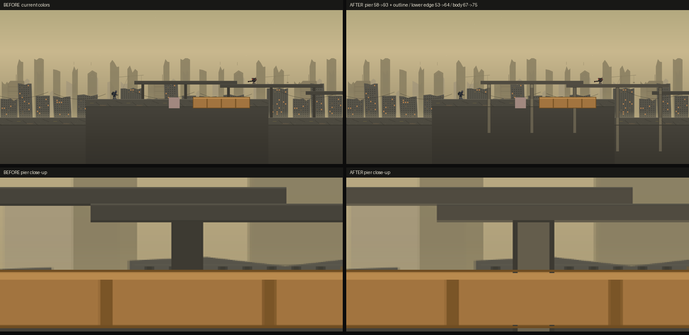

方向照你说的:桥柱变淡。但只提柱不够——账上真正和玩家撞的是「柱 + 桥面下暗缘」两个暗件,所以四个色一起重排,桥整体仍比雾洗后的中景楼暗一档,和背景的分离不动。
| 构件 | 现色 | L* | vs 玩家 | 诊断 |
|---|---|---|---|---|
桥墩柱 #3d3a32 | 纯色竖条 | 58 | 差 8 | 跑桥下必叠的 20px 竖条,无描边,和玩家剪影糊死 |
桥面下暗缘 #37352d | 53 | 差 3 | 玩家跳桥侧时糊;且此色与地块暗条纹同值 | |
桥面板身 #46433a | 67 | 差 17 | 勉强 | |
桥面上亮缘 #5a574b | 87 | 差 37 | 工作正常,不动 |
| 构件 | 新色 | L* | 理由 |
|---|---|---|---|
| 桥墩柱 | #645d4c + 1.5px #3d3a32 描边 | 93 | 你说的"柱变淡"。玩家差 43;与雾后楼(107)明度接近,但柱有描边、矢量锐边、暖褐相,楼是雾洗柔边——层次仍分;老柱色复用作描边色 |
| 桥面下暗缘 | #453f35 | 64 | 不再撞玩家(差 14),仍比板身暗一档保住"板厚"读法 |
| 桥面板身 | #504b40 | 75 | 微提,与玩家差 25 |
| 桥面上亮缘 | #5a574b(不动) | 87 | — |
整条明度阶梯变成:玩家/敌人 50 → 下暗缘 64 → 板身 75 → 亮缘 87 / 柱 93 → 雾后楼 107 → 天空。单调、无重叠带;桥仍比背景暗、饱和略高,分离语义保持。

bridge_after.png。改后:柱在雾洗楼群前靠描边+锐边立住,玩家/敌人深色剪影叠在柱与桥面任一处都有 40+ 明度差;桥面亮缘仍是玩家站桥上时的脚下对比。
| 文件 | 改动 |
|---|---|
assets/env_rust_deck.svg | 板身 #46433a→#504b40、下暗缘 #37352d→#453f35(亮缘不动) |
scripts/obstacle.gd _rebuild_piers | pier.color #3d3a32→#645d4c;柱 Polygon2D 改为「柱体 + 后置 2px 描边矩形」(或换 Line2D),描边色 #3d3a32 |
注意:#37352d 与地块暗条纹同色源不同资产,只改 deck.svg 不会波及地块(已在本提案合成中验证过边界)。烘焙后跑一次 fog_check_preview 即可在引擎内复核。